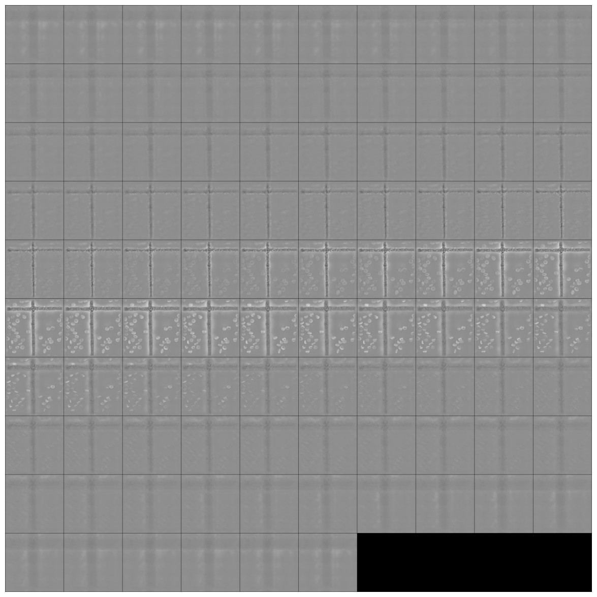
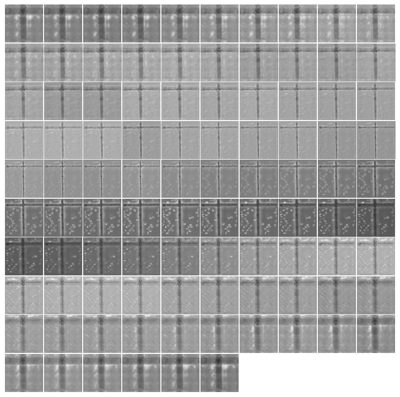

print(get_target('train_folder', same_filename=False)('../signal/signal01.tif'))
print(get_target('train_folder')('../signal/image01.tif'))train_folder/target01.tif
train_folder/image01.tifGet the ground truth images located in a folder called ‘gt’ and divided in labeled subfolders.
These function are tailor-made for some test datasets, eventually they must be changed/adapted to more general cases
get_target (path, same_filename=True, target_file_prefix='target', signal_file_prefix='signal')
get_gt (path, gt_file_name='avg50.png')
print(get_target('train_folder', same_filename=False)('../signal/signal01.tif'))
print(get_target('train_folder')('../signal/image01.tif'))train_folder/target01.tif
train_folder/image01.tifGet as ground truth another noisy image randomly chosen in the same folder as the input image
get_noisy_pair (fn)
attributesFromDict (d)
Function to display the 3D volume in axial, coronal or sagittal reconstruction. The display functions does not consider the spacing between pixels, so reconstructions may look unusual.
mosaic_image_3d (t:(<class'numpy.ndarray'>,<class'torch.Tensor'>), axis:int=0, figsize:tuple=(15, 15), cmap:str='gray', nrow:int=10, alpha=1.0, return_grid=False, add_to_existing=False, **kwargs)
Plots 2D slices of a 3D image alongside a prior specified axis. Args: t: a 3D numpy.ndarray or torch.Tensor axis: axis to split 3D array to 2D images figsize, cmap: passed to plt.imshow nrow: passed to torchvision.utils.make_grid return_grid: Whether the grid should be returned for further processing or if the plot should be displayed. add_to_existing: if set to true, no new figure will be created. Used for mask overlays
tiff2torch (file_path:str)
Load tiff into pytorch tensor
show_images_grid (images, ax=None, ncols=10, figsize=None, title=None, spacing=0.02, max_slices=3, ctx=None, cmap=None, norm=None, aspect=None, interpolation=None, alpha=None, vmin=None, vmax=None, origin=None, extent=None, interpolation_stage=None, filternorm=True, filterrad=4.0, resample=None, url=None, data=None, **kwargs)
Show a list of images arranged in a grid.
Parameters: - images: list of images to display. - ncols (int): number of columns in the grid. - figsize (tuple, optional): figure size in inches. - titles (list, optional): list of titles corresponding to each image. - spacing (float, optional): spacing between subplots. - ctx: additional context passed to the plt.Axes.imshow function. - **kwargs: additional keyword arguments passed to plt.Axes.imshow.
Returns: - axes: matplotlib axes containing the grid of images.
file_path = '../../bioMONAI-main_0/_data/Babesia/RI/O11_RI_frame01.tiff' #'../_data/Babesia/RI/O11_RI_frame01.tiff'
img_tensor = tiff2torch(file_path)
print(img_tensor.shape)
mosaic_image_3d(img_tensor, figsize=None)
show_images_grid(img_tensor, cmap='gray');torch.Size([96, 512, 512])

features to be implemented